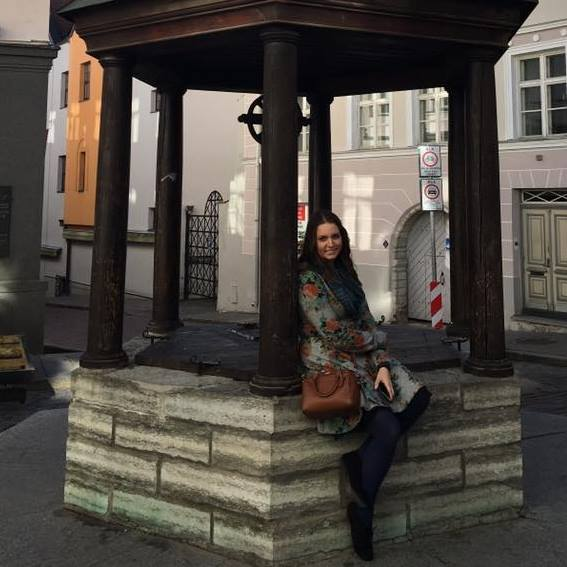

Most Recent Posts
Fall Creek Vineyards Tempranillo
May 31, 2017

This week marked another week for an “Out of the Box” wine. This was a wine that my husband picked up for me while driving home from a business trip. He stopped at the famous Salt Lick BBQ in Driftwood, TX for lunch and saw that they had set up a cellar shop next door. Since, my husband knows me well, he knew he would have to pick me up a bottle...
Exem Bordeaux Blanc
May 24, 2017

Wow! I knew this week was going to be special! My very first Bordeaux. The beautiful light green glass with the intricate filigree label made my mouth water before I even started pouring a glass. I was so excited that I could hardly contain myself...
Prodigo Nero d’Avola
May 17, 2017

At first glance I fell in love with this bottle from Prodigo. At the time, I did not need to know that it was from Sicily or that it was made from the most important red wine grapes. * All I needed to know was that this dark tinted bottle and beautiful gold filigree was speaking to me...
La Pinot Pinot Noir
May 3, 2017

This week was an exciting one. I got a new box from Wine Awesomeness and inside I discovered that they had partnered with a winery in order to create their own wine. My first thought was this is either going to be very good or possibly very bad. Of course I had to try this one first, so I pulled it out and began my research...
Balance Sauvignon Blanc
April 26, 2017

I have to say, before trying this wine I definitely thought the logo for Balance Winery was absolutely adorable. A little elephant balancing on top of the winery? How cute...
About Me
My name is Shandelle and I am a lover of all things wine. I am based in Dallas with my husband and our two mini longhaired dachshunds...
Follow me


Labels